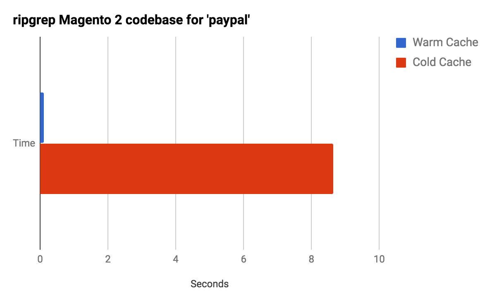

Imagining A World Without Caching
Who Am I?
- Magento Developer at Something Digital (Magento Gold Solution Partner)
- Actively blogging about Magento and other technology
- Spoken at NomadMage, NYC Magento meetup.
There are only two hard things in Computer Science: cache invalidation and naming things.
- Phil Karlton
http://www.kingletas.com/2012/08/caching-performance-optimization.html
https://magento.stackexchange.com/questions/3806/pre-warming-the-magento-enterprise-full-page-cache
Why bother with caching?
Types of caching when making an HTTP request to Magento...
Let's imagine a world without any caching...
Browser Cache
What Is It?
- When you make a request your browser will first check it's cache to see if the response is available.
- Cache contents are stored on your local device.
- If the response is in cache, the request never hits the network.
- Your application uses HTTP response headers to instruct the browser how to cache the response.
Imagining A World Without It

http://www.webpagetest.org/result/170418_CF_068e646b72e79540d5eba4037a346446/
Improvements will be even more drastic on real world sites
Pro Tips
- Magento 2 has built in cache busting via static asset deployment, but it could be smarter / more flexible.
- Magento 1 does not support cache busting out-of-the-box.
- Magento's built in merge JavaScript / merge CSS feature is bad for browser cache. Use HTTP/2 or roll your own.
- Be very careful with caching HTML documents. There's no way to invalidate them.
Recommended Reading
Agenda
DNS Caching
What Is It?
- When a request hits the network, DNS is used to understand which server to go to.
- DNS records are hosted on nameservers.
- A TTL is included in each DNS record. Your computer and the internet cache DNS records for that long.
- If the DNS record is in cache, the nameserver does not need to be consulted to find where to go.
TTL

TTL Strategies
- Set it low (e.g 5 minutes) for instant changes - Cloudflare, Never deal with propagation again
- Compromise between fast changes and cache hit rate (e.g. 1 hour) - Dyn, Everything You Ever Wanted To Know About TTLs
- Set it high (e.g. 24 hours). Decrease it before you make changes. Then set it high again - Rackspace, Best Practices for using TTL
Imagining A World Without It

Every request your browser makes takes additional round trip to name server get address
Agenda
Edge Cache / CDNs
What Is It?
- Traditionally, when a request hits the network, it travels from the location of the user to the server hosting the response.
- CDNs ("Content Delivery Networks") sit between the user and the server ("at the edge") and cache responses.
- CDNs ("Content Delivery Networks") have many edges all around the world.
- Frequently used with static assets (img, js, css), but HTML can be served from the edge too.
Why?
- Responses cached at edge are closer geographically to user, reducing round-trip-time.
- Frees up resources on your origin webserver to focus on executing PHP, MySQL, etc...
Imagining A World Without It

Requests for assets must travel all the way to origin server, regardless of geographic user of end server.
Some Popular Providers...
- Cloudflare
- Cloudfront (Amazon)
- Akamai
- Fastly (Magento cloud)
- Section.io
Agenda
(Full) Page Cache
What Is It?
- When Magento handles a request there is a lot of work required to generate the resulting HTML.
- Full Page Caching reuses the generated static HTML in subsequent requests.
- In Magento 2 you can use Varnish as a reverse proxy. It is included in CE.
- In Magento 1 page cache is EE only. Request is still handled by the web server and saved to cache backend. Community plugins support both caching strategies.
"Full Page Caching reuses the generated static HTML in subsequent requests." - Me, just now
But we can't serve it all statically
Strategies For Dealing With Personalized Content
- ESI
- AJAX (Magento 2)
- "Containers" (Magento 1)
Imagining A World Without It
https://inviqa.com/blog/how-full-page-cache-works-magento-2Imagining A World Without It
"It typically speeds up delivery with a factor of 300 - 1000x, depending on your architecture." - https://varnish-cache.org/intro/
Pro Tips
- Strip query params the server doesn't need to increase hit rate (e.g. gclid).
- Easy to mess up. Monitor your hit rate!
Tracking Query Params Registry
Agenda
Code caching
What Is It?
- Some application code is expensive to run.
- The result of the code is saved somewhere.
- Next time the code needs to run it first checks if the response is in cache
- The cache result can persist requests (e.g. saved in redis) or be reused in context of single request (saved in variable)
Examples In Magento (persisting requests)
- Config cache
- Layout cache
- Block cache
- Opcache
Imagining A World Without It
Agenda
MySQL Query Cache
Imagining A World Without It
MySQL re-runs every query
Controversy!
Although MySQL Query Cache was meant to improve performance, it has serious scalability issues and it can easily become a severe bottleneck.
MySQL 8.0: Retiring Support for the Query Cache - MySQL Server Blog
Counterpoint
With Magento, you can expect to have a light write workload, very low concurrency and also quite complex SELECT statements. Given the results of our simple benchmarks, it is finally not that surprising that the MySQL query cache is a good fit in this case.
The MySQL query cache: Worst enemy or best friend? - Percona
Pro Tips
- Check your hit rate
- For high throughput sites it may actually hurt you, due to locking. Be ready to tune and refine.
- ProxySQL is an interesting query cache replacement, and official endorsed by MySQL dev team.
Agenda
Linux Page Cache
What Is It?
- Reading off disk is slow.
- Reading from memory is fast.
- Linux caches things it previously read from disk in any available memory.
Imagining A World Without It
Agenda
Magento Indexes
What Is It?
- Calculating things like whether or not a product can be sold, or the final price of a product is an expensive operation.
- It would be a lot more efficient to pre-calculate (and cache) these calculations for quicker lookup.
- Magento indexes are an faux-implementation of a materialized view to implement this functionality.
They are not indexes like a BTree or hash but act more like a pre-calculation table. In SQL parlance this often known as a Materialized View. This is similar to a regular view, where the table contains the results of a query but unlike a regular view which updates its contents when the row changes a Materialized View does not.
MySQL does not support Materialized Views and so Magento implemented a sort of pseudo-Materialized View.
(New(ish)) Indexing in Magento or "The wonderful world of materialized views" - Kevin Schroeder
Imagining A World Without It

Magento page load times tank as it chugs away calculating product prices, attribute values, and product sale-ability.
Pro Tips
- Set indexing mode to run on schedule (EE only in M1, included in CE in M2)
- Be careful with the changelog tables when transfering data to stage / dev or you might break indexing
Conclusion
"Caching != Performance"
- This statement is patently false.
- The goal of "performance" is to make things faster.
- Caching is a tried and true strategy for doing that at all levels of the stack.
The correct message
- Caching is not the only part of performance.
Other important things for a performant Magento site (a few)
- Efficient data querying.
- Avoiding model LSD in loop.
- Minimizing bytes sent across the network (images, scripts, styles).
- Well configured infrastructure.